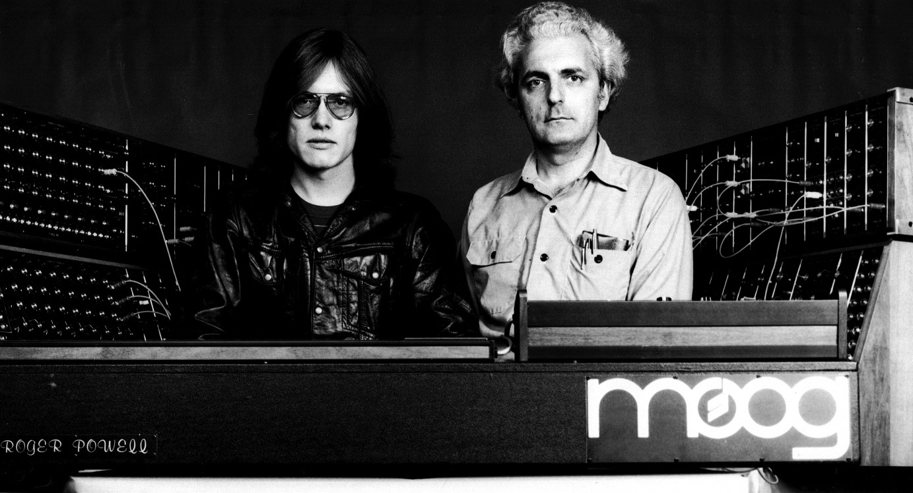

Dr. Robert "Bob" Moog
Electronic music pioneer, innovator and inventor

Roger Powell and Bob Moog (right) with custom modular controller designed by Bob for Roger, at Radio City Music Hall, 1974.
- 1934 Born in New York City on May 23.
- 1952 Graduated from the Bronx high School of Science.
- 1949 Built his first theremin at age 14.
"Everything has some consciousness, and we tap into that. It is about
energy at its most basic level."
-Robert Moog
If you have time, you should read more about this inspirational human being on his Wikipedia entry